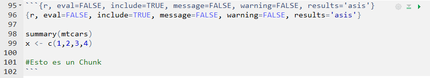

Cómo usar R Markdown para reportes
Julio César Iturra Sanhueza
Abstract
El presente documento tiene por objetivo facilitarles la vida a través del la elaboración de documentos a través de R Markdown. La gracia de los documentos con extensión.rmd permite facilitar el uso de códigos para el cálculo matemático, estimación de modelos, y, sobre todo, el reporte de sus resultados en tablas de calidad. Dentro de las posibilidades, R Markdown permite elaborar documentos que combinan el código nativo de R, como también es posible emplear código .tex, o también conocido como documentos en \(\LaTeX\).
Introducción
Configuración previa
Este documento está enfocado al reporte en formato .pdf, dado que me parece más adecuado para el reporte de informes y trabajos académicos. A modo general, la figura a continuación muestra cómo funciona R Markdown cuando estamos empleando formato .pdf.

Figura: Flujo de trabajo empleado por R Markdown
El primer cuadro es su documento en R Markdown, donde escriben su código en R y lo combinan con texto. Knitr es el paquete que convierte todo lo que ustedes escriben a formato Markdown (.md), lo cua posteriormente es transformado por Pandoc en cualquiera de los formatos que ustedes necesiten (.pdf, .html o .doc). El resultado de este proceso es su documento final.

Figura: Alternativas de formato con R Markdown
Lo necesario para trabajar en .pdf
Cuando estamos empleando documentos en .pdf, Pandoc requiere de que ustedes tengan instalado en su computador alguno de los paquetes base para escribir documentos en \(\LaTeX\). Para esto deben instalar alguno de los paquetes disponibles, en mi caso uso Miktex, el cual tiene soporte para Windows, Mac y Linux. Hasta ahora no me ha dado problemas y lo recomiendo.
- Ir a la web de Miktex
- Descargar el instalador y ejecutarlo
- Esperar que termine la descarga de los paquetes, lo cual puede demorar varios minutos.
- Cuando esté todo listo, reinicien su computador.
Finalizado este paso, pueden comenza a trabajar con R Markdown sin problemas.
Características de un documento
YAML header
El YAML header corresponde al lugar donde ustedes pueden determinar las opciones de su documento. Generalmente comenzamos poniendo el nombr, autoría y fecha de su documento. Agregué otras opciones que son útiles para dar formato a su documento, tales como el tamaño de la fuentes (fontsize), el interlineado (linestretch), márgenes (geometry) abstract.
---
title: "Cómo usar R Markdown"
author: "Julio Iturra - jciturra@uc.cl"
date: '`r format(Sys.time(), "%d %B, %Y")`' # Fecha actual del sistema
fontsize: 11pt
linestretch: "1.0"
geometry: margin=0.78in
output:
html_document: default
header-includes: # Esto sirve para cargar los paquetes de LaTeX que necesiten usar en su documento.
- \usepackage[spanish,es-tabla,es-nodecimaldot]{babel} #Para "Tabla" y "Figura" en español. Punto para decimal.
- \usepackage[utf8]{inputenc}
- \usepackage{booktabs}
abstract: "El presente documento tiene por objetivo facilitarles la vida ..."
---La opción output tiene tres opciones para convertir su documento en .pdf, .html y .doc. A mi me gusta realizarlo en pdf para los informes y html para mis reportes de datos y exploración, dado que los trabajos en html pueden ser abiertos en cualquier sistema operativo sin la necesidad de un software especializado como Adove o Nitro reader (por dar algunos ejemplos).
Elaborar títulos y enumeración
#Título grande
##Título mediano
##Título pequeño
Viñetas autonumeradas
1. Para crear numeración según sus necesidades
a. Para crear sub-numeración con letras, también se puede realizar con números.
* Una viñeta cuadrada
Ecuaciones y símbolos matemáticos
$ e=mc^2 $
\(e=mc^2\)
Si quieres conocer más símbolos puede ver este sitio
Usar chunks
* el ctrl + alt + i
eval=TRUESirve para determinar si queremos que se vean nuestros resultados.include=TRUESirve para determinar si queremos que se incluya nuestro código.message=FALSESirve para determinar si queremos los mensajes emergenter.warning=FALSESirve para determinar si queremos las advertencias de R.results='asis'Permite que el código creado por las funciones de R sea empleado en la compilación.- ¡run! (flecha verde o ctrl+shift+enter)
Ejemplo:
#{r, results='hold'}
revolucion <- "Marx"
revolucion
velocirraptor <- "rawr"
velocirraptor## [1] "Marx"
## [1] "rawr"Reporte de Tablas
Paquetes en R
| Paquete | Funciones | Repositorio |
|---|---|---|
| knitr | kable() | yihui/knitr |
| kableExtra |
kable_styling() | haozhu233/kableExtra |
| xtable | xtable() | dlaurie/xtable |
| texreg | texreg() htmlreg() screeneg() | leifeld/texreg |
| stargazer | stargazer() | cran/stargazer |
Instalemos los paquetes:
install.packages("knitr")
install.packages("kableExtra")
install.packages("xtable")
install.packages("texreg")
install.packages("stargazer")Carguemos los paquetes:
library(knitr)
library(kableExtra)
library(xtable)
library(texreg)
library(stargazer)
library(dplyr) #principalmente para usar el operador %>% Modelos con texreg
El paquete texreg es muy útil cuando se trata de reportar modelos de regresión, tiene bastantes funcionalidades, pero las principales son el hecho de que permite reportar modelos anidados en una sola tabla.
Con un modelo
#Un logit fome...
pl <- lm(voto ~ sexo + edad + educon + ecivil + ppol+ socconf+confl, data=coes, link="logit") #--- tabla en html usando htmlreg() del paquete texreg-------------------------------#
htmlreg(pl, #Si son más modelos ponemos list(m1,m2,m3)
digits = 3, #dígitos de la tabla
float.pos="h!", #permite dejar la tabla fija en su lugar
scalebox = 0.70, #indica que la tabla tiene una proporción del 75% c
caption = "Modelo Logit", #título del modelo
custom.coef.names=c("(Intercepto)", #Podemos asignar nombres a los coeficientes
"Mujer","Edad","Educación",
"Soltero/a","Viudo/a","Sep/Div/Anu",
"Centro","Derecha",
"No sabe/No responde",
"Confianza Social",
"Per.Conflicto"),
custom.model.names = "Modelo 1",doctype = FALSE) #si son más modelos = c("Modelo1","Modelo2")| Modelo 1 | ||
|---|---|---|
| (Intercepto) | 0.063 | |
| (0.077) | ||
| Mujer | -0.004 | |
| (0.023) | ||
| Edad | 0.009*** | |
| (0.001) | ||
| Educación | 0.037*** | |
| (0.006) | ||
| Soltero/a | -0.090** | |
| (0.029) | ||
| Viudo/a | -0.004 | |
| (0.047) | ||
| Sep/Div/Anu | -0.055 | |
| (0.038) | ||
| Centro | -0.041 | |
| (0.033) | ||
| Derecha | 0.100** | |
| (0.036) | ||
| No sabe/No responde | -0.069* | |
| (0.033) | ||
| Confianza Social | 0.002 | |
| (0.011) | ||
| Per.Conflicto | 0.033* | |
| (0.015) | ||
| R2 | 0.130 | |
| Adj. R2 | 0.124 | |
| Num. obs. | 1538 | |
| RMSE | 0.432 | |
| p < 0.001, p < 0.01, p < 0.05 | ||
Con modelos anidados
#```{r, eval=TRUE, include=TRUE, message=FALSE, warning=FALSE, results='asis'}
m1=glm(voto~sexo+edad+educon+ecivil+ppol+socconf,
data=coes, family=binomial) #Educación continua
m2=glm(voto~sexo+edad+educ +ecivil+ppol+socconf,
data=coes, family="binomial") #Educación categórica
m3=glm(voto~sexo+edad+educon+ecivil+ppol+socconf+ppol*socconf,
data=coes, family="binomial") #Interacción Posición Política*Confianza Social
#--- tabla en html usando htmlreg() del paquete texreg-------------------------------#
texreg::htmlreg(list(m1,m2,m3), digits = 3,float.pos="h!",scalebox=0.50,
caption = "Modelos Logit",
custom.model.names = c("Modelo 1", "Modelo 2", "Modelo 3"),
custom.coef.names = c("(Intercepto)","Mujer","Edad",
"Educación","Soltero/a","Viudo/a",
"Sep/Div/Anu","Centro","Derecha",
"No sabe/No responde","Confianza Social",
"Primaria","Secundaria","Técnica superior",
"Universitaria","Centro:Conf.Social",
"Derecha:Conf.Social","NS/NR:Conf.Social"),
doctype = FALSE)| Modelo 1 | Modelo 2 | Modelo 3 | ||
|---|---|---|---|---|
| (Intercepto) | -2.158*** | -1.458*** | -1.957*** | |
| (0.383) | (0.390) | (0.395) | ||
| Mujer | -0.045 | -0.054 | -0.042 | |
| (0.124) | (0.124) | (0.125) | ||
| Edad | 0.047*** | 0.044*** | 0.047*** | |
| (0.005) | (0.005) | (0.005) | ||
| Educación | 0.211*** | 0.218*** | ||
| (0.034) | (0.034) | |||
| Soltero/a | -0.410** | -0.476** | -0.393** | |
| (0.147) | (0.148) | (0.148) | ||
| Viudo/a | 0.057 | 0.003 | 0.039 | |
| (0.290) | (0.290) | (0.291) | ||
| Sep/Div/Anu | -0.336 | -0.323 | -0.347 | |
| (0.205) | (0.205) | (0.206) | ||
| Centro | -0.191 | -0.194 | -0.507* | |
| (0.175) | (0.174) | (0.234) | ||
| Derecha | 0.633** | 0.653** | 0.105 | |
| (0.214) | (0.213) | (0.278) | ||
| No sabe/No responde | -0.338 | -0.358* | -0.598** | |
| (0.174) | (0.174) | (0.232) | ||
| Confianza Social | 0.021 | 0.027 | -0.287* | |
| (0.062) | (0.062) | (0.139) | ||
| Primaria | 0.309 | |||
| (0.273) | ||||
| Secundaria | 0.385 | |||
| (0.219) | ||||
| Técnica superior | 0.602* | |||
| (0.257) | ||||
| Universitaria | 1.319*** | |||
| (0.265) | ||||
| Centro:Conf.Social | 0.360* | |||
| (0.174) | ||||
| Derecha:Conf.Social | 0.643** | |||
| (0.226) | ||||
| NS/NR:Conf.Social | 0.290 | |||
| (0.179) | ||||
| AIC | 1712.793 | 1723.704 | 1709.801 | |
| BIC | 1771.514 | 1798.439 | 1784.536 | |
| Log Likelihood | -845.396 | -847.852 | -840.900 | |
| Deviance | 1690.793 | 1695.704 | 1681.801 | |
| Num. obs. | 1538 | 1538 | 1538 | |
| p < 0.001, p < 0.01, p < 0.05 | ||||
Tablas con Kable y KableExtra
#```{r tabla, echo=TRUE, message=FALSE, results='asis'}
age = c(1,2,3,4,5)
ageF = factor(age, labels=c("35-44","45-54","55-64","65-74","75-84"))
deaths1 = c(32,104,206,186,102)
deaths2 = c(2,12,28,28,31)
#Person-Years
py1 = c(52407,43248,28612,12663,5317)
py2 = c(18790,10673,5710,2585,1462)
tabla <- as.data.frame(cbind(ageF,deaths1,py1,deaths2,py2)) #creamos el data.frame
tabla$ageF = factor(age, labels=c("35 - 44","45 - 54","55 - 64","65 - 74","75 - 84"))
#----nuestra tabla------
kable(tabla,
format = "html",
booktabs =TRUE,
escape = FALSE,
align = c("lcccc"),
caption = "Muertes por enfermedad cardiaca después de 10 años",
col.names = linebreak(c("Grupo <br> de edad",
"Muertes ",
"Persona-años ",
"Muertes",
"Persona-años"),
align = "c")) %>%
kable_styling(latex_options =c("hold_position"), # Aquí comienza kable_extra
full_width = FALSE) %>%
add_header_above(c(" " = 1,
"Fumadores" = 2,
"No fuma" = 2))|
Grupo de edad |
Muertes | Persona-años | Muertes | Persona-años |
|---|---|---|---|---|
| 35 - 44 | 32 | 52407 | 2 | 18790 |
| 45 - 54 | 104 | 43248 | 12 | 10673 |
| 55 - 64 | 206 | 28612 | 28 | 5710 |
| 65 - 74 | 186 | 12663 | 28 | 2585 |
| 75 - 84 | 102 | 5317 | 31 | 1462 |
Otros tutoriales
- Escribir una Tesis en R Markdown(Van Espen, 2017)
- Rmarkdown ultimate Guide (Xie et al. 2018)
- KableExtra y Latex (Zhu, 2018)
- Pimp-my-rmd (Holtz, 2018)
PISTA: Si desdeas conocer más detalles sobre el uso de R Markdown, puedes encontrar aquí una guía completa de las funcionalidades del paquete.